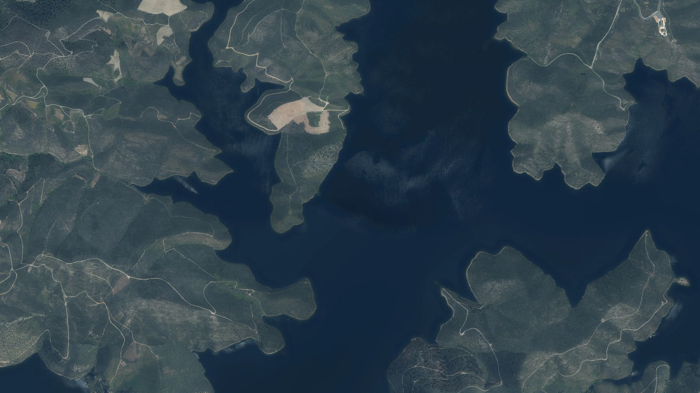
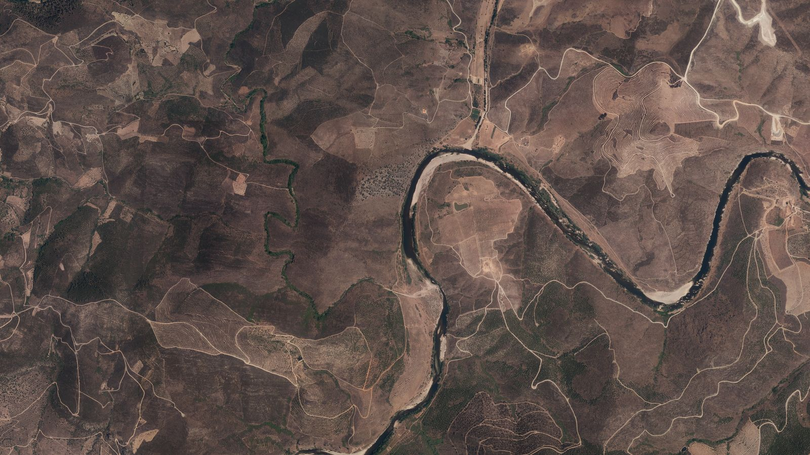
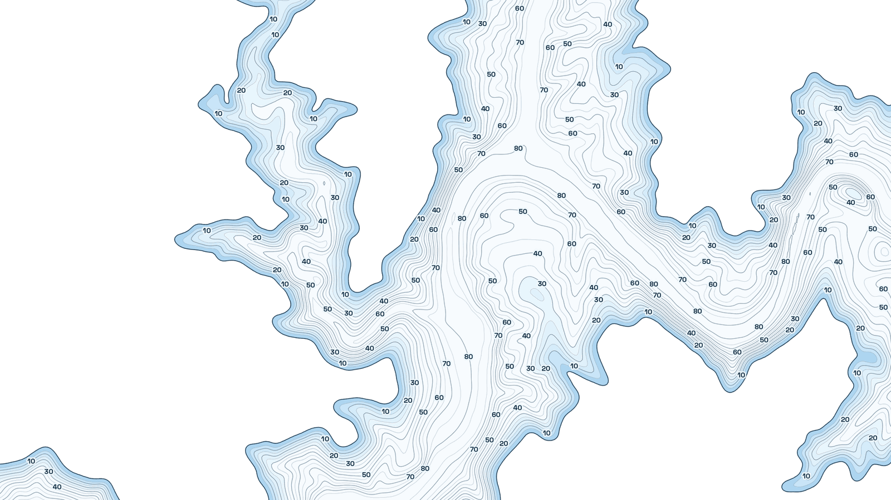
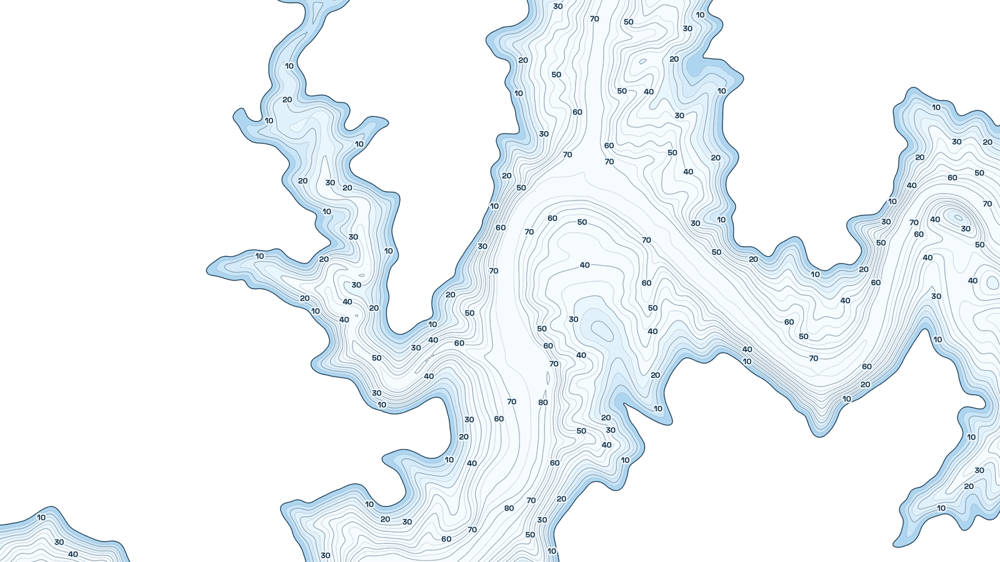
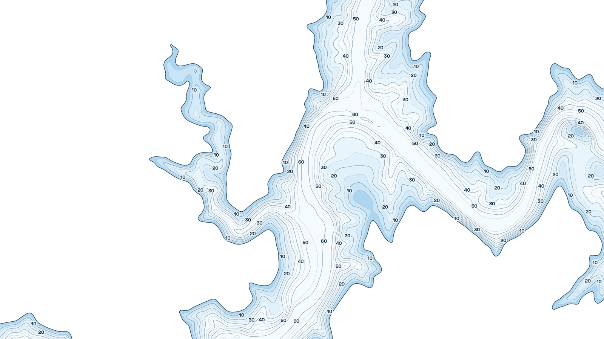
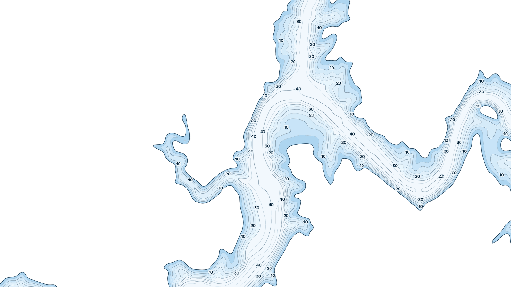

Orthophotos 2012 and 2025: © Direção-Geral do Território, CC BY 4.0, cropped · Estimated depth by InfoSpot, produced using Copernicus WorldDEM-30 © DLR e.V. 2010-2014 and © Airbus Defence and Space GmbH 2014-2018 provided under COPERNICUS by the European Union and ESA; all rights reserved · Contains modified Copernicus Sentinel data 2016-2026 · Landsat courtesy of the U.S. Geological Survey
Baixo Sabor (Portugal), with the reservoir full
Fish the reservoirs of Spain knowing what lies below
Contour lines and estimated depth, aerial photos from before the water, the weekly level and the weather. In the browser and on Android.
On an iPhone? Use the web version: the iOS app will come later.
Today, just water
This is the Baixo Sabor on the 2025 orthophoto. From above, the reservoir is a dark patch: it does not tell you where the bottom is.
2012: the valley before the water
The 2012 aerial photo, before the reservoir was filled: the river, its meander and the tracks now under water. InfoSpot has aerial photos of every reservoir, in Spain from 1956 on.
The depth, line by line
Depth colours and contour lines on the map, labelled every 10 m. It is an estimate built from years of satellite images: a guide, not for navigation.
At this week's level
The reservoir rises and falls. InfoSpot draws the depth at the latest reading or at the level you choose: the shore moves back and every spot loses metres.
Tap the water
Tap a point on the map and it tells you the estimated depth there. When you mark a spot, it is saved with it.